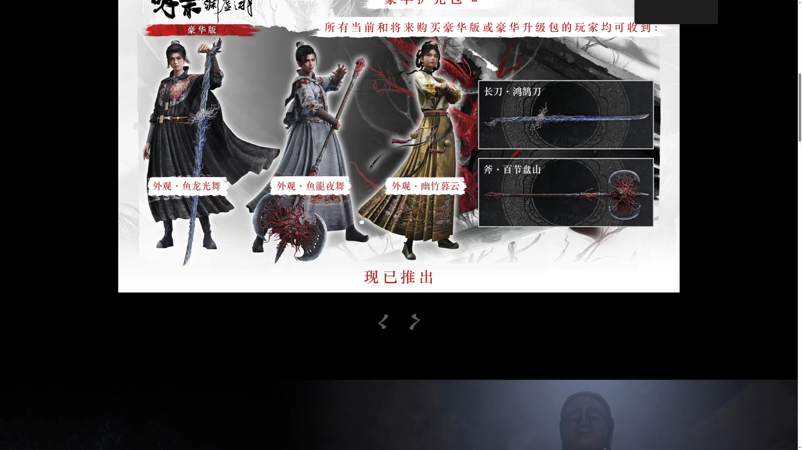
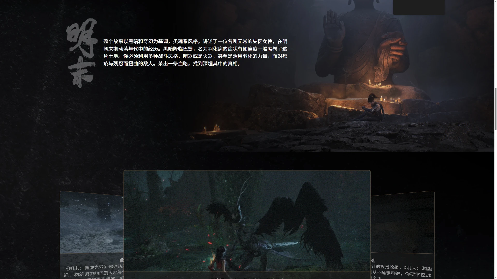
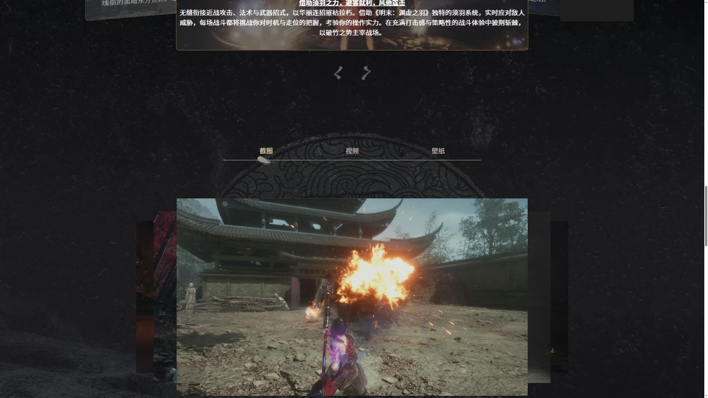
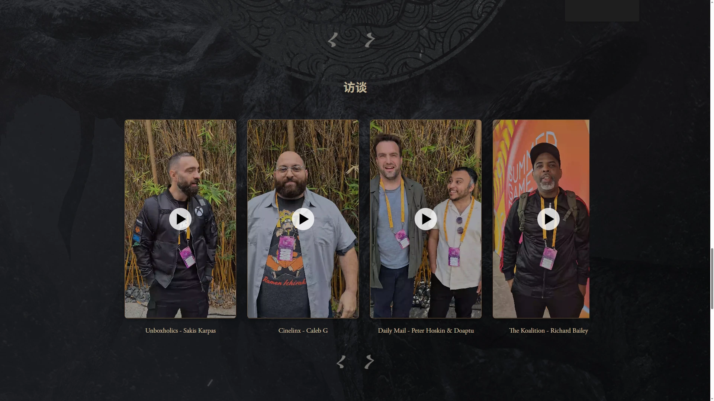
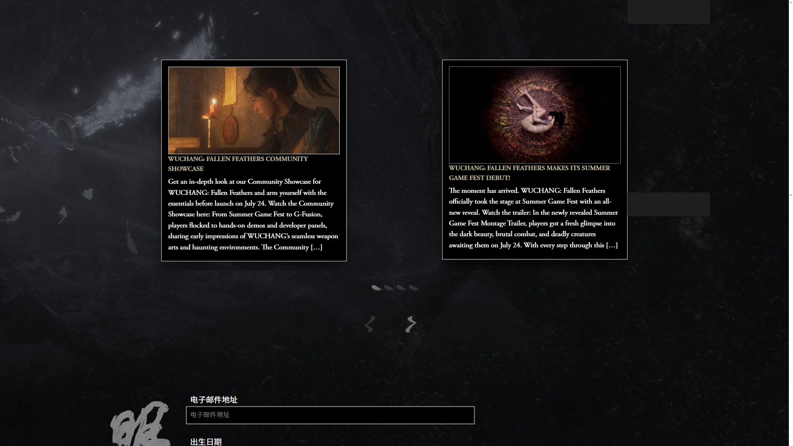
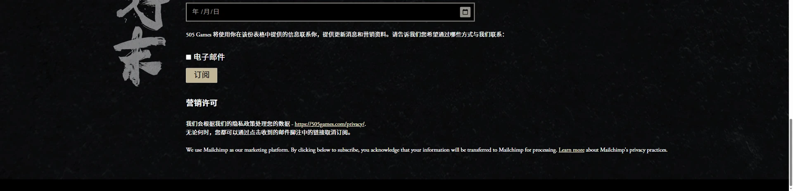

明末克苏鲁气质的魂系动作 RPG，强调东方恐怖氛围与冷兵器战斗。







想象一个崇祯末年的巴蜀——四川的吊脚楼在雨雾里被泡得发软，山城的石板路上躺着昨夜咳血而死的人。这一年外面在打仗、里面在闹饥荒，最糟的是一种叫「羽病」的瘟疫——染上的人先长出羽毛，布料被骨刺顶破、皮肤渗出黑色瘴气，最后整个人变成另一种你叫不出名字的东西。这不是你以为的那个明代历史——这是被《聊斋》和克苏鲁同时啃过的明代，东方暗绿 × 灰白瘟疫双色锁死了整片巴蜀。
你叫无常——一个戴着白面具的女剑客，穿明末布衣轻甲，身边一把刀、一张弓。可你不记得自己是谁。你醒来的那个清晨，整座小镇已经空了；你身上有一道淡淡的羽病印记，每打一场仗，那道印记就深一点。你比对面任何妖物都更危险——因为你不知道再走几步，那个变成妖物的人，会不会就是你自己。
你不是一个人在走这条路。替你点亮明灯的同道，有可能在下一座庙里翻过来扑你；瘟疫村里的妖化领主断气前会对你叫一声你早该忘掉的名字；幕后那群披着暗红仪式袍的人，正在用某种古老的纹样把这场羽病一点一点种进巴蜀。这不是一个关于复仇的故事，是一个关于「认得自己」的故事——你下一次照镜子的时候，那张脸还是不是你的？
明末暗绿 × 东方克苏鲁，是把考据级明末历史美术（飞鱼服、曳撒、吊脚楼、巴蜀山城）和克苏鲁式肉变恐怖（骨刺、羽毛、肉壁）塞进同一帧画面里。底色是熟悉的中式古建残破——雨雾、苔藓、风化木墙；变异在于东方妖怪从「志怪」走向「不可名状」，从《聊斋》的鬼狐进化到肉里长出的羽毛。色彩锁定暗绿色腐败 + 灰白色瘟疫 + 血红高光三色 DNA。整体调性介于《血源诅咒》的克系压迫与《雨血》的中式暗黑之间。
中式志怪与西式克苏鲁的合流是近十几年的事。1960-80 年代，《聊斋志异》改编电影和邵氏的志怪片把「鬼狐妖魅」拍成了大众视觉记忆；1990 年代的港式僵尸/灵异片（林正英）把明清符箓+尸变定型为东方恐怖的视觉骨架。进入2000 年代，《雨血》系列（梁其伟）用国产独立游戏的方式开始尝试「中式暗黑动作」。2015 年的《血源诅咒》把克系恐怖+硬核动作推到全球范式。明末踩在这条线上，把明代历史考据 × 东方克苏鲁做成了一个全新的子类——它的同代参照还有《卧龙：苍天陨落》（2023）《赤痕：夜之仪式》这些「历史 + 超自然」的混合体。
基于体验清单 · 审美偏好 · IP故事三维度综合选出